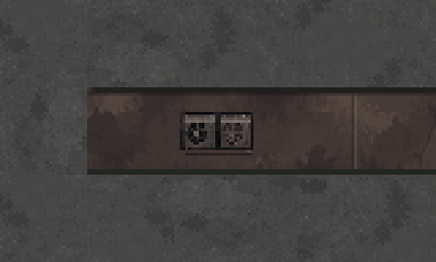
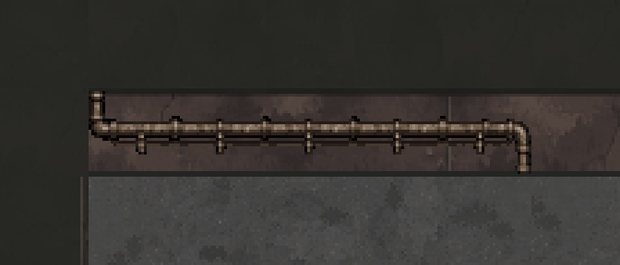
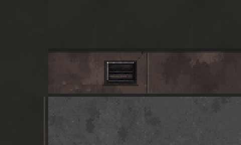
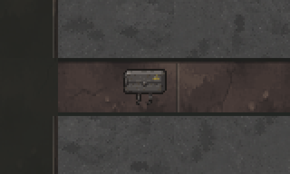

설비 벽 장식만 · 현재 맵에서 보기
실제 1층의 벽에서 각 종류를 골라 3배 확대한 모습입니다. 굿즈·셔터·캐릭터는 빼고 설비 장식과 주변 벽·바닥만 보여줍니다.
1. 실외기

원래 32×32 타일 · 좌표 34, 182. 양끝 반대 꺾임 배관

원래 32×32 타일 · 좌표 45, 83. 환기구

원래 32×32 타일 · 좌표 55, 94. 소형 분전함

원래 32×32 타일 · 좌표 23, 28전체 배치도로 돌아가기